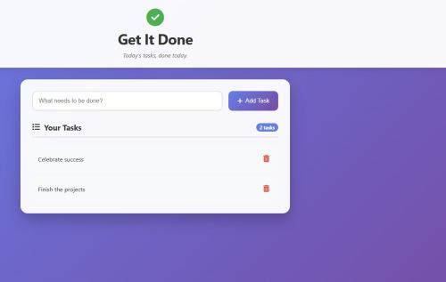

Get It Done — Full-Stack Task Manager (MVC)
A full-stack to-do list application built with the MVC architecture. Users can add, view, and delete tasks, with a content filter to block inappropriate language. The backend features a REST API (Node.js + Express), a PostgreSQL database hosted on Render, and automated table creation. The frontend is a responsive React app deployed on Netlify. This project demonstrates complete full-stack development, from database design to live deployment.
Node.js
Express
PostgreSQL
React
REST API
Render (DB + Backend)
Netlify (Frontend)
CSS3 (Glassmorphism)